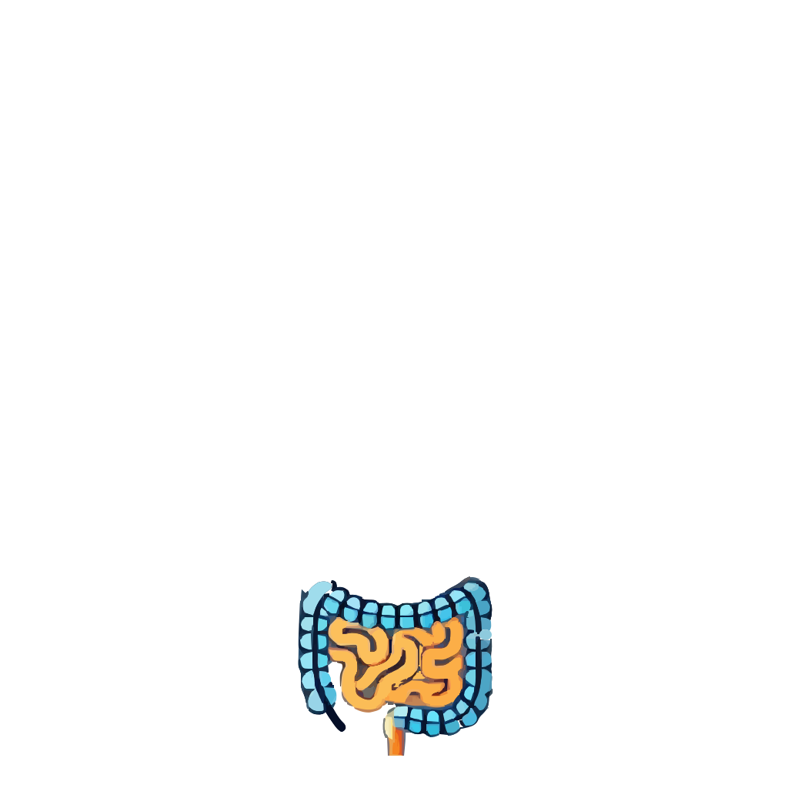
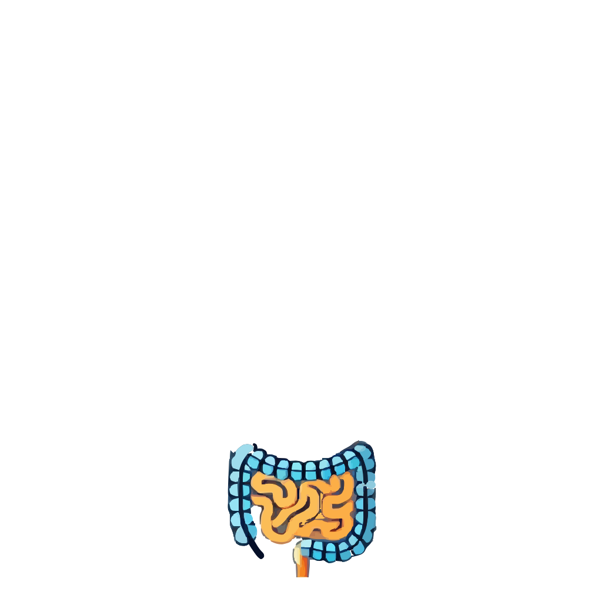

Poumons
Les océans sont les poumons de la Terre. Ils régulent l'atmosphère terrestre. Tout comme les poumons échangent l'oxygène et le dioxyde de carbone avec le sang, les océans absorbent le dioxyde de carbone de l'atmosphère et libèrent de l'oxygène grâce à la photosynthèse des algues.
Virus & éléments étrangers
Le plastique est le premier élément étranger auquel on peut penser. Avec le réchauffement climatique, des espèces se reproduisent énormément, menaçant parfois l'équilibre des écosystèmes.
Cerveau
Les écosystèmes marins, complexes, sont comparables au cerveau. Chaque écosystème fonctionne comme un réseau interconnecté où chaque espèce joue un rôle vital. Ces écosystèmes régulent les interactions biologiques et chimiques essentielles à la vie marine.
Coeur
Les courants marins sont comme le sang, ils circulent dans les océans. Ces courants transportent chaleur, nutriments et organismes marins sur de vastes distances, tout comme le cœur distribue l'oxygène et les nutriments aux cellules du corps. La santé de ces systèmes circulatoires est essentielle à la vie.
Foie
Cela fait écho aux processus naturels de filtration des eaux dans les zones humides ou par les coraux, qui purifient l'eau en éliminant les polluants et en maintenant la santé des habitats aquatiques. Ces mécanismes naturels sont cruciaux pour la survie des espèces marines.
Intestins
Les sédiments marins peuvent être vus comme des intestins. Ils nourrissent les organismes benthiques. Les nutriments issus de la décomposition organique dans les sédiments soutiennent une multitude de formes de vie aquatique, tout comme notre système digestif soutient notre métabolisme.
Reins
Ce processus est analogue au cycle de l'eau dans la nature, où l'eau s'évapore, se condense et retombe sous forme de précipitations peut faire penser aux reins. Les reins assurent que notre corps reste hydraté et équilibré, tout comme le cycle de l'eau maintient les écosystèmes en bonne santé.
Vessie
La vessie stocke l'urine jusqu'à son évacuation, semblable aux réservoirs d'eau qui accumulent les eaux pluviales avant leur redistribution dans les rivières ou les aquifères. Cette capacité de stockage est essentielle pour gérer les ressources en eau tant pour les humains que pour la nature.
Estomac
L'estomac est responsable de la digestion des aliments, tout comme les océans nourrissent une multitude d'organismes grâce à leurs nutriments dissous. Les océans agissent comme un immense réservoir alimentaire pour la vie marine, fournissant énergie et nutriments nécessaires à la survie des espèces.


 
